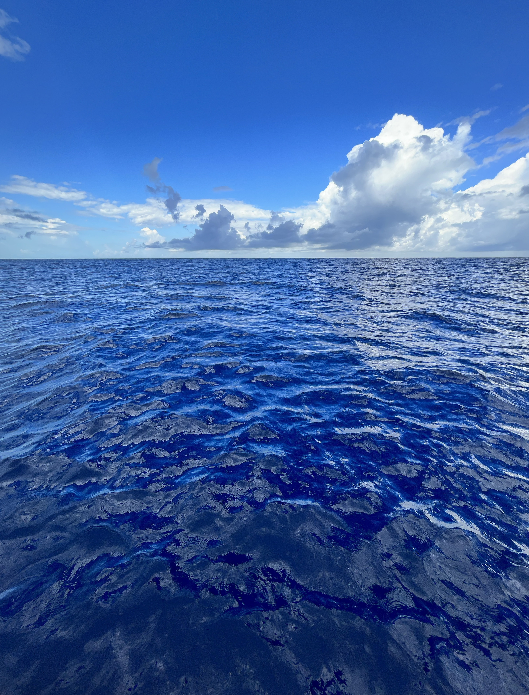
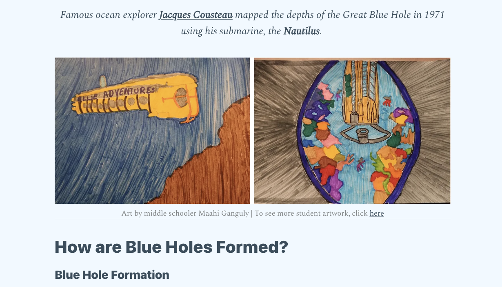
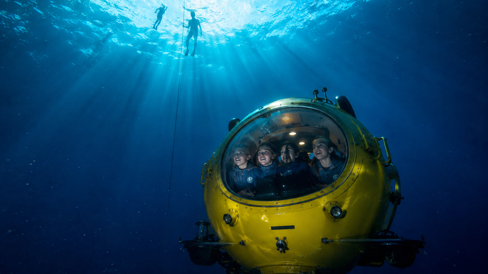
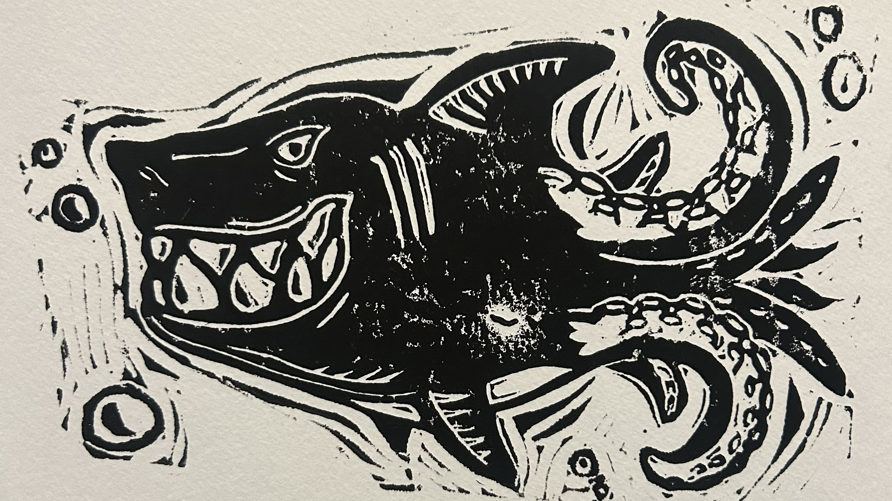
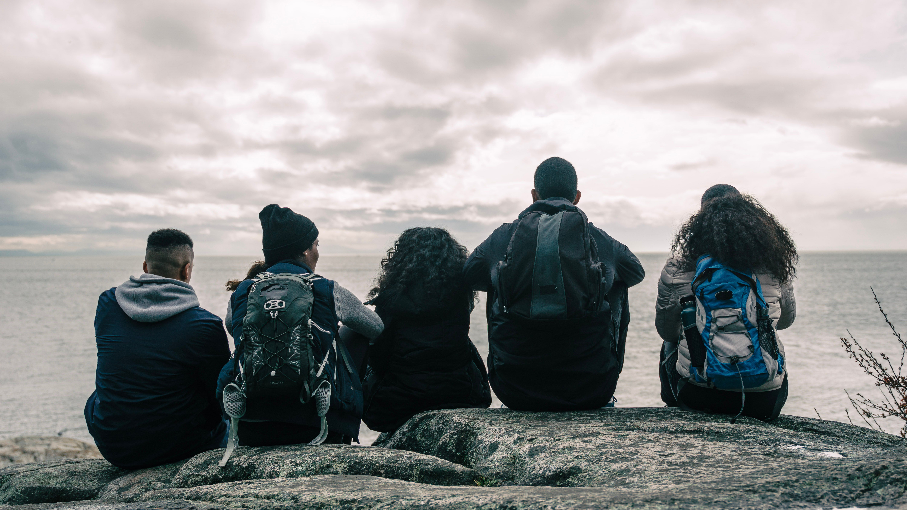
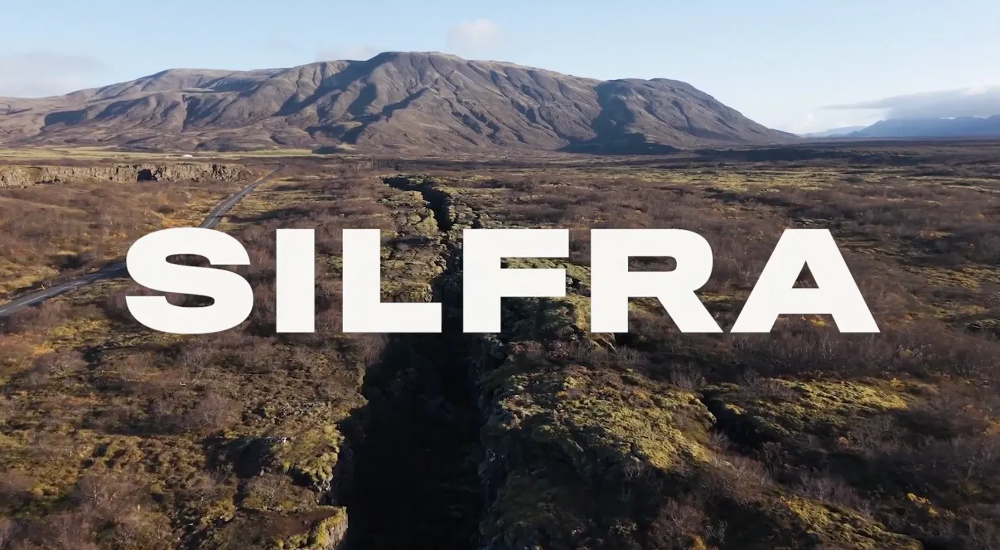
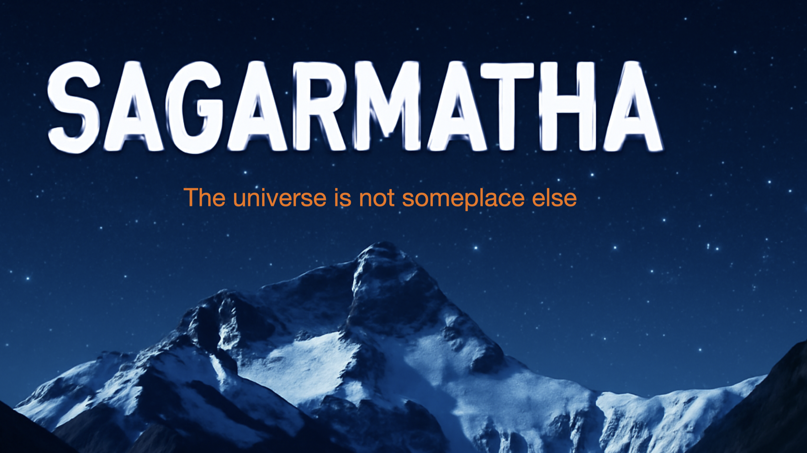
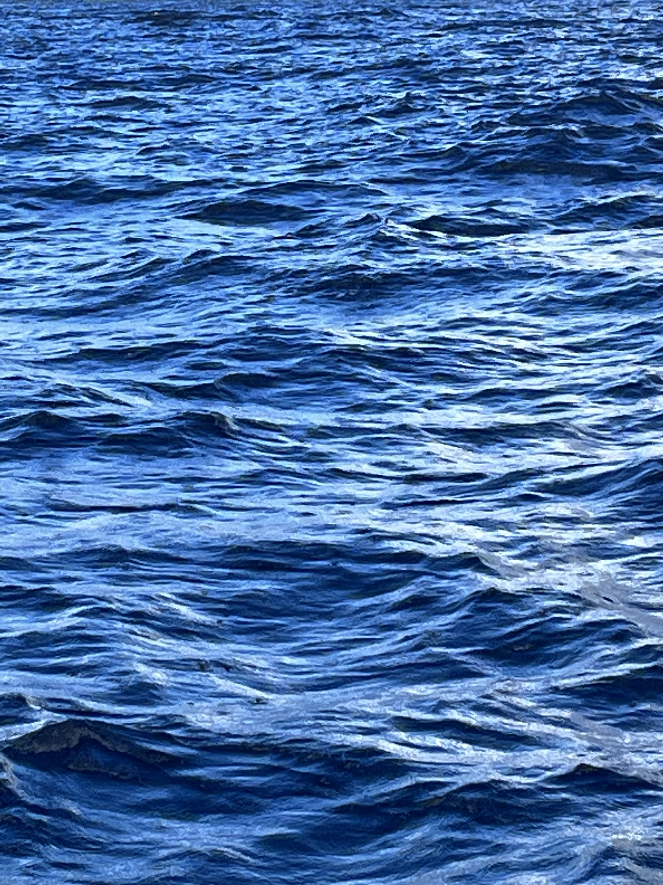

The ocean has a story.
You can tell it.
Join a global network of young storytellers turning ocean-conservation ideas into sustainable media enterprises — newsletters, films, podcasts, VR experiences, and more.
From spark to enterprise
Every great project starts as an idea. OCEAN gives you the community, mentorship, and structure to build it into something real.
Dive in
Monthly virtual gatherings. Scientists, storytellers, and changemakers share what they know.
Make something
Start your project. Video, audio, print, immersive — the format is yours to choose.
Tell us your idea
Submit a short pitch. The community gives feedback. Mentors get involved. It grows.
Build an enterprise
Graduate your project into a self-sustaining storytelling enterprise with a real audience.

Stories already in the water
Real projects built by the OCEAN community — each one proof that young storytellers can launch sustainable enterprises around ocean conservation.

This Ocean Planet
A Substack newsletter delivering ocean science and storytelling to readers worldwide — soundscapes, youth leaders, plastics, and more.

Dean's Blue Hole VR
An immersive VR experience plunging young viewers into the world's deepest known blue hole — free-diving, marine biology, and wonder combined.

The Ocean's Call
A youth book series using original printmaking art and vivid storytelling to bring ocean creatures and conservation into classrooms and homes.

Ocean College
A peer-learning cohort where young people study ocean systems alongside working scientists and storytellers — building knowledge and community together.

Silfra
SILFRA follows a single drop of glacial meltwater on its decades-long journey beneath Iceland — from the Langjökull glacier to the crystal-clear Silfra fissure. Guided by scientists and explorers, it reveals how glaciers, volcanoes, rivers, and tectonic plates connect across deep time and transformation.

Sagarmatha
When octogenarian journalist Sundar Saha loses the newspaper job he held all his life, he sets off with his daughter Pradipta and his influencer granddaughter Noyoni on a road trip to Nepal — toward the awe of Sagarmatha, the Nepali name for Mount Everest. Releasing as a short film and graphic novel in 2027.

The ocean covers 71% of our planet.
Less than 20% has been mapped.
The stories that will protect what we haven't yet seen haven't been told yet. They're waiting for you.
Start your story →Join the OCEAN community
Monthly virtual meetups. Project showcases. Mentorship from scientists and working journalists. Open to young storytellers worldwide.
What you get
- Monthly virtual community meetings
- Access to the OCEAN project network
- Feedback on pitches from mentors
- The This Ocean Planet newsletter
- Connection to scientists and journalists
- A community of ocean storytellers
Pitch your ocean story
A few sentences is enough to start. We'll get back to you within two weeks.
What makes a good pitch?
- An ocean subject you care deeply about
- A format you're excited to work in
- A sense of who the audience is
- Why this story matters now
If you are under 13, please ask a parent or guardian to submit on your behalf and confirm their consent in the message field.
Prefer email? Send your pitch directly to sanjeev@mediaforchange.org.
Twenty-five years of water storytelling
Founded at the University of Miami
The One Water project begins as a research and production initiative at UM's School of Communication, examining global water systems through documentary film.
One Water — the documentary
Narrated by Martin Sheen, the feature documentary premieres after three years of field work across 14 countries. It wins Best Documentary at the Foyle and Columbus International Film Festivals. Watch on the original One Water site → · Read on Wikipedia →
387 million households
Discovery Networks broadcasts One Water internationally, reaching an estimated 387 million households and becoming a foundational text for the global water justice movement.
Media for Change founded
Building on the documentary's reach, Media for Change launches as a global 501(c)(3) nonprofit dedicated to empowering purposeful storytellers to drive social change.
Stockholm World Water Week
One Water is presented at Stockholm World Water Week, connecting with the global water security policy community and expanding the project's international network.
2,300 schools across India
A water-focused storytelling curriculum reaches more than 2,300 schools, demonstrating the reach of media-as-education at national scale.
The OCEAN community platform
One Water — OCEAN launches: a place for young storytellers worldwide to pitch ideas, build projects, and grow them into sustainable enterprises — with the ocean as the shared subject.
Riding the Same Wave
The OCEAN community, by the role each person plays — where they sit on the wave says something about the kind of work they do. Click a group to meet them.